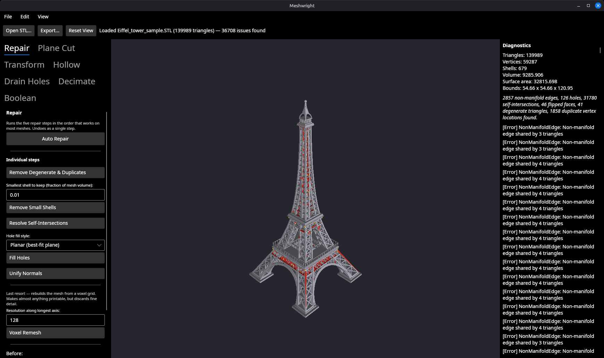
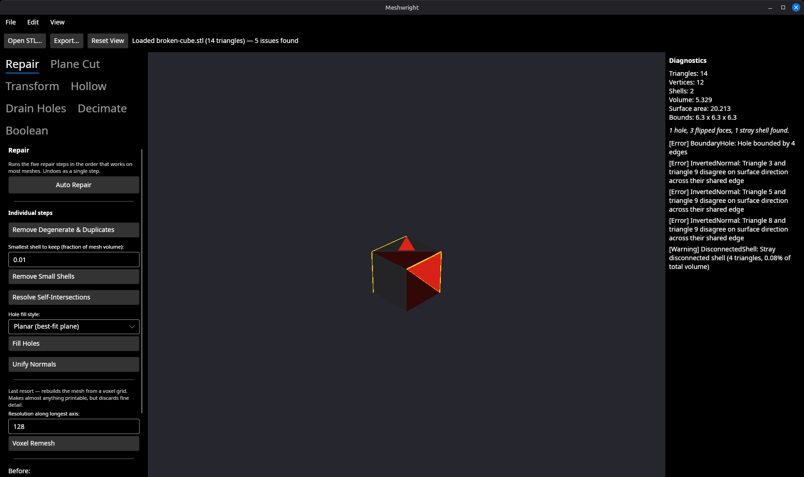
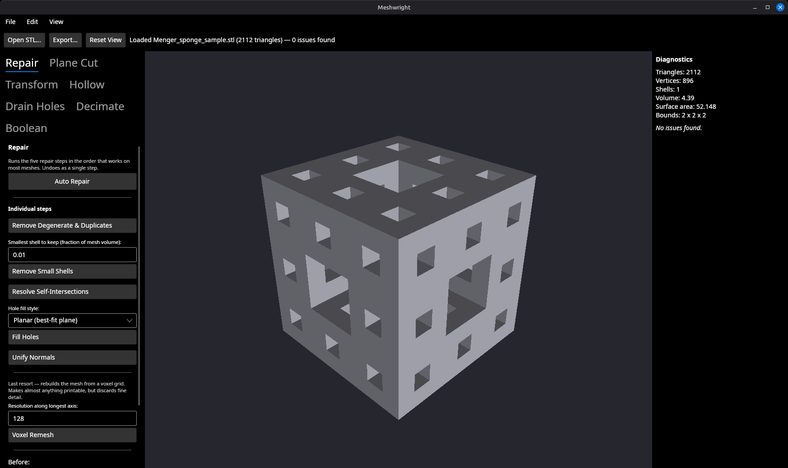
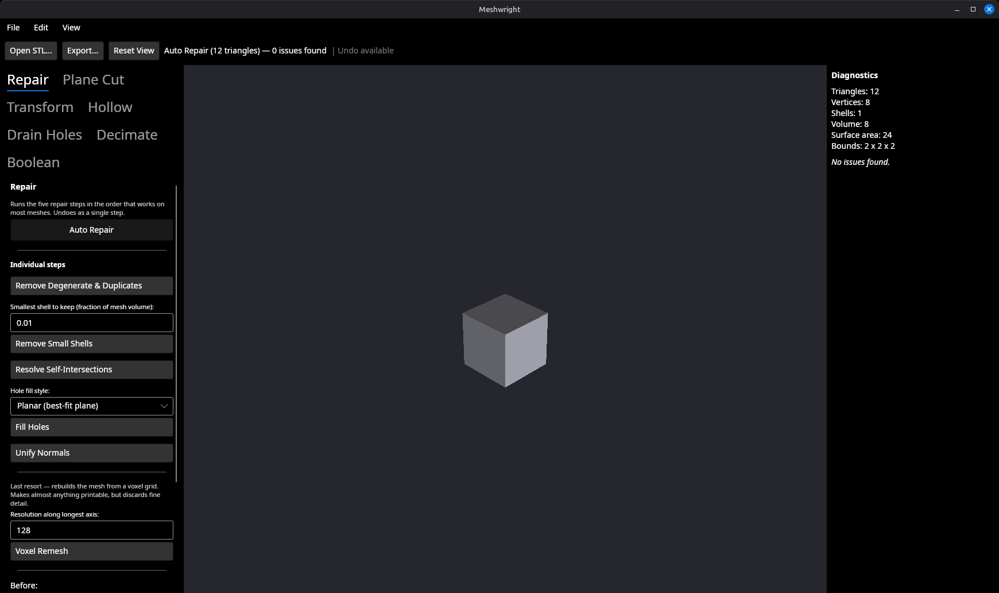
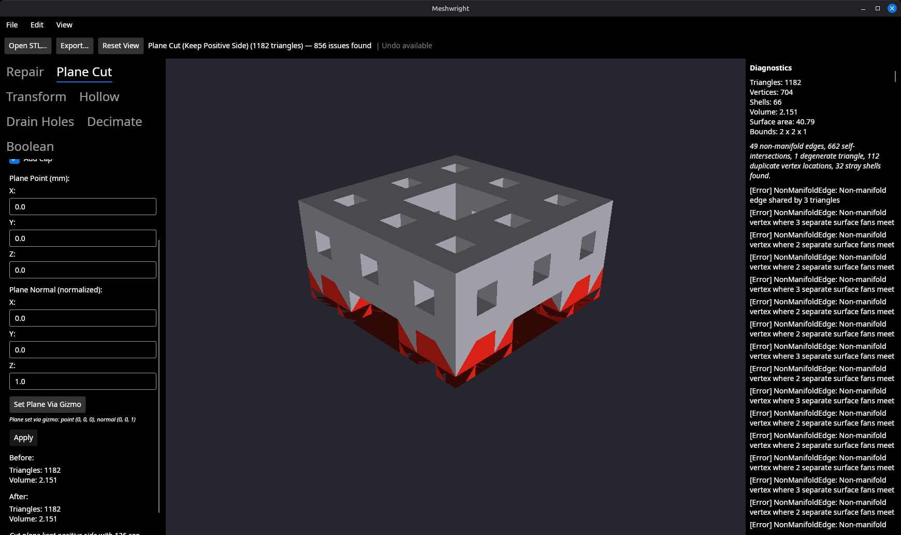
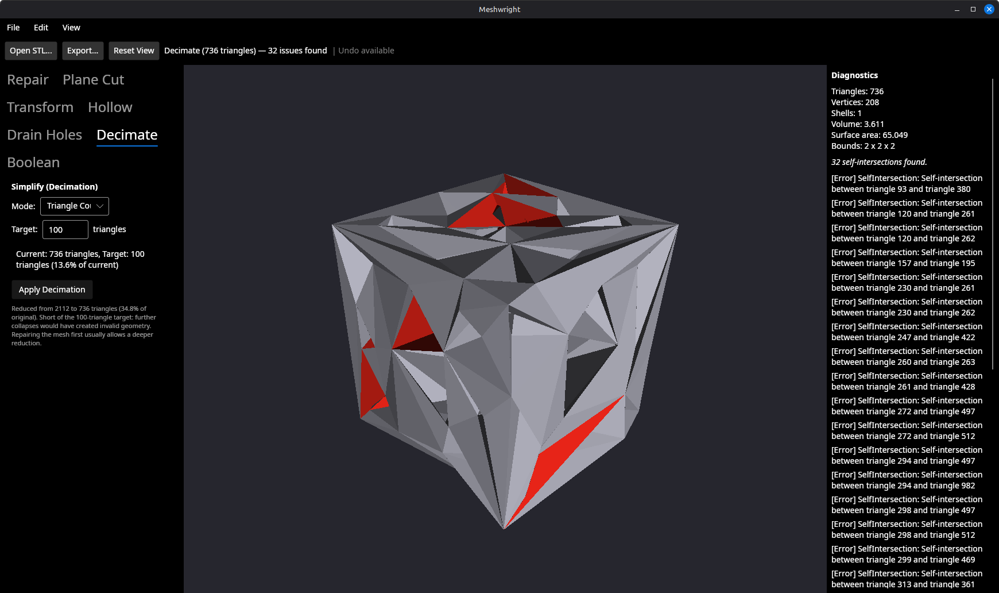

Taking a mesh from "downloaded or scanned" to "ready to slice": what each
panel does, in the order you would normally use them.
1. Opening a mesh
Use Open STL… in the toolbar, File → Open,
or pass a path on the command line:
meshwright model.stl
STL and OBJ are supported. Meshwright treats Z as up, the
STL and print-bed convention, so a model authored for printing arrives
standing the right way up.
If part of a file cannot be loaded, the status line says so rather than
quietly dropping geometry — a mesh a quarter of which never made it in
would otherwise be reported as having no problems.
Moving around the viewport
Input
Does
Left-drag
Orbit around the model
Middle- or right-drag
Pan
Scroll wheel
Zoom
Ctrl+0, or Reset View
Refit the camera on the mesh
Ctrl+Z / Ctrl+Y
Undo / redo the last operation
Reset View is the way back if an orbit or zoom loses the model off screen.
2. Inspecting
Diagnostics run automatically on load and again after every operation — you
never press an "inspect" button. The panel on the right reports mesh
statistics, a plain-language summary, and an itemised list of defects.
Anything it can locate in space is highlighted in red directly on
the model, so a defect list entry has somewhere to look.

A 139,989-triangle scan: 2,857 non-manifold edges, 126 holes, 31,780
self-intersections, 46 flipped faces and 679 separate shells, summarised
at the top right and highlighted on the model.
Seven detectors run on every mesh:
Non-manifold edges — edges shared by more than two triangles. Slicers cannot decide what is inside.
Boundary holes — open loops, so the model is not a solid.
Self-intersections — the surface passing through itself.
Flipped normals — faces pointing inward.
Degenerate triangles — zero-area slivers.
Duplicate vertices — coincident points that leave the surface unwelded.
Disconnected shells — stray fragments floating alongside the real model.

samples/broken-cube.stl, shipped for exactly this: a missing
face, three flipped normals and a stray tetrahedron, each named and
located. Small enough to see every defect at once.

A healthy mesh for comparison: one shell, No issues found, and
nothing highlighted. This is what you want before slicing.
3. Repairing
The Repair tab is the first panel, because inspect-then-repair
is the common path.
Auto Repair
Auto Repair runs five steps in the order that works on most
meshes: degenerate and duplicate cleanup, small-shell removal, self-intersection
resolution, hole filling, then normal unification. Cleanup runs first so later
steps see a tidier mesh; self-intersection resolution runs before hole filling
because it can leave holes behind for that step to close; normals are unified
last because earlier steps change which edges and shells exist.
The whole run undoes as a single step, not five.

The broken cube above after one click: the stray shell gone, the missing
face closed, normals unified — one shell, No issues found, and a
volume of exactly 8 for a 2 × 2 × 2 cube.
Running steps individually
Below Auto Repair, each step can be run on its own for meshes where the
default sequence does the wrong thing. Two take parameters:
Remove Small Shells — the smallest shell to keep, as a fraction of total mesh volume (default 0.01, so anything under 1% goes). Raise it to be more aggressive about stray fragments; lower it if the model legitimately has small separate parts.
Fill Holes — the triangulation style. Planar (the default) fits a best-fit plane and is correct for non-convex holes. Flat fans from the hole's centre, which is cheaper but can overlap on large holes. Smooth adds one interior vertex relaxed onto the average of three boundary corners and is only marginally different from planar.
Voxel remesh
Kept below a separator and deliberately excluded from Auto Repair.
It rebuilds the model from a voxel grid, which makes almost anything
printable at the cost of discarding fine detail — a last resort for meshes
the other steps cannot fix, not a step every repair should pay for. The
resolution setting is the sample count along the model's longest axis.
4. Editing
Plane Cut
Cuts the model along a plane. Three modes:
Keep Positive Side — keeps the half the plane normal points toward.
Discard Positive Side — keeps the other half.
Split — keeps both halves, each capped, as separate shells. This is the mode for cutting a model too tall for the printer into parts.
Set the plane numerically, or press Set Plane Via Gizmo and
drag it in the viewport. Once the gizmo has been dragged its values win over
the text boxes, so you cannot half-edit a stale number and get a surprise.
Add Cap seals the opening the cut leaves.

A cut through the middle: bounds from 2 × 2 × 2 to 2 × 2 × 1, still a
single shell. The remaining defects are all in the cap, because this
cross-section is many separate loops — see
known rough edges.
Transform, Hollow, Drain Holes, Boolean
Transform — move, rotate, scale and mirror, with a viewport gizmo, plus an Align to Bed button that drops the model onto Z=0.
Hollow — shells the model out to a given wall thickness in millimetres, to save material. Wall thickness can be set by dragging a handle in the viewport or typed numerically.
Drain Holes — places holes so resin or powder can escape from a hollowed model. Click the model in the viewport to position one.
Boolean — union, difference and intersection against a second mesh you load from disk with the panel's own Load Secondary Mesh… button. The operation buttons stay disabled, with a status line explaining why, until a secondary mesh is loaded.
Every operation reports what it did, updates the viewport and diagnostics
immediately, and is undoable.
5. Simplifying
Decimate reduces the triangle count by quadric edge collapse,
targeting either an absolute Triangle Count or a Percentage
of the current count. The readout resolves your target live as you type,
without running the reduction.

Decimation reports when it cannot reach the target rather than presenting
a shortfall as success.
Repair before you simplify. Edge collapses that would create
non-manifold geometry are refused, so on a broken mesh the reducer stalls
early — above, a request for 100 triangles stopped at 322. Running Auto
Repair first usually allows a far deeper reduction, and decimating a
defective mesh tends to add self-intersections, as it did here.
6. Exporting
Export… writes the current mesh to STL or OBJ, chosen by the
extension you give it. Check the diagnostics panel first: No issues
found and a single shell is what you want before handing the file to a
slicer.
Known rough edges
Meshwright is pre-1.0 and built in the open. The things most likely to
surprise you:
Repair can remove geometry it mistakes for debris.
Auto Repair's small-shell step deletes shells under 1% of total volume,
and it cannot tell a genuine stray fragment from a real part of a model
that arrived in pieces. On a model with legitimately small separate
parts, lower the threshold or run the steps individually. Watch the
bounds in the diagnostics panel: if they shrink, something was deleted.
Boolean uses the secondary mesh's own file coordinates, with no
way to reposition it first. Loading a second mesh does not
move it to overlap the primary — it operates wherever its file placed
it. If the two models don't already occupy the same space in the
outside world, Union produces two disconnected shells instead of one
merged one, and Difference or Intersection can silently produce an
empty result. There is no gizmo or numeric offset for the secondary
mesh yet; if a boolean looks wrong, check both models' bounds in a
third-party tool first.
Hole fill "Smooth" is planar. It produces a correct cap,
just not a smoothed one.
Operations are synchronous. On a six-figure-triangle mesh,
Auto Repair and decimation can take tens of seconds with no progress bar
and an unresponsive window.
Not every spatial parameter has a gizmo yet. Plane cut,
transform, drain-hole placement and hollow wall thickness have gizmos.
Decimate has no spatial parameter; Boolean's secondary mesh cannot be
positioned; Repair's parameters are scalars.
No packaged release. Linux .deb packaging
exists; Windows and macOS packaging do not.
Reset View does nothing. The toolbar button and the
Ctrl+0 keyboard shortcut both leave the camera untouched,
even on a fresh load. If orbiting or zooming puts the mesh off screen,
reopening the file is currently the only way back.
The panels' Before/After figures are always identical.
Every edit panel re-reads its "before" figures from the already-mutated
document, so they always match what the "after" shows. Plane Cut showed
"Before: 1309 triangles / 2.195" after cutting a 2112-triangle,
4.39-volume mesh. No panel can reveal what an operation actually removed.